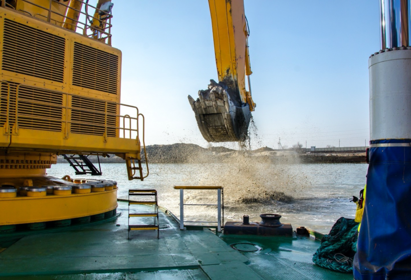
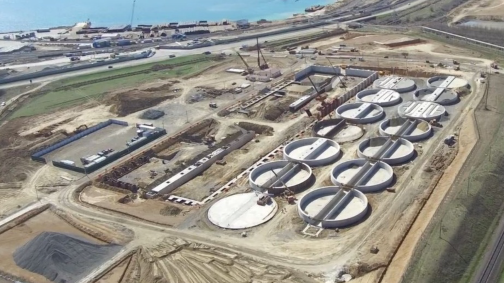

Процес пішов: Як будують причал для терміналу MV Cargo
3 лютого, 2020
Компания MV Cargo реализует в Южном проект строительства зернового терминала в рамках контракта с одним из крупнейших зернотрейдеров мира — Cargill. Уже ведутся сваебойные работы и осуществляется дноуглубление у будущего причала.
Железный монстр с шумом погружается в воду. Повсюду разлетаются брызги и грязь. Палубу заливает. Пятнадцатикубовый ковш подымает со дна землю и пересыпает на баржу. Раз за разом, пока она не будет заполнена и на смену не придет другая. 24 часа в сутки ведутся дноуглубительные работы в операционной акватории компании MV Cargo.
«У нас был рекорд — мы погрузили баржу за 22 минуты, — рассказывает директор «ТИС-Гидротехника» Олег Заступайло. — Это сделал немец Фолька. Он работал с нами на «Мебиус». Команда, которая занимается строительством причалом — это 65 человек, 90% из которых — бывшие сотрудники компании «Мебиус». Сам Олег ранее возглавлял «Мебиус Украина». «Это Вы всех привели?», — спрашиваю. Олег улыбается: «Они сами пришли».
Руководитель «ТИС-Гидротехника» — мужчина около 50 лет, сдержанный, точный и последовательный. Ему нельзя быть не точным — от него зависит судьба гидротехнических сооружений. Он построил все причалы для компании ТИС, теперь строит причал №25 для MV Cargo. На вопрос, почему выбрал эту профессию, говорит, что изначально, когда «Мебиус» только пришел в Украину в 2004 году, думал, что на годик-два… потом затянулось.
Строители хвалят дноуглубительную технику Liebherr. «В Украине такая только здесь, — хвастается главный инженер, — а в мире — всего штук десять». В свое время эта машина выкопала всю акваторию для ТИС. Объем ковша — 14,5 куб м, глубина копания — 19 м. «По проекту должны поднять 720 тыс. т, реально уже сделано 650 тыс. т. В среднем достаем около 5 тыс. куб в сутки — это 11-12 барж. Поднятый грунт отвозим за 13,5 км от места дноуглубления на морской отвал. Если брать с нуля подобный экскаватор, он стоит 18 млн евро. Под него нужны шаланды, каждая из которых стоит около 2 млн евро. Плюс специалисты, оборудование… в общем, нужно вложиться где-то в 30 млн евро», — делится Олег Заступайло.
"В среднем достается около 5 тыс. куб в сутки — это 11-12 барж. Поднятый грунт отвозят за 13,5 км от места дноуглубления на морской отвал.
Однако акватория — это только часть дела. Еще нужно углубить подходной канал, но это уже задача АМПУ. Соответствующая договоренность между госкомпанией и MV Cargo была достигнута еще до начала строительства. Сейчас проходит тендер по отбору подрядчика. Согласно последним новостям, свои предложения подали пять дноуглубительных компаний.
К сожалению, у нас не было возможности посетить строительство, поэтому мы задали дополнительные вопросы Филиппу Грушко, директору по развитию MV Cargo.
Філіп Грушко
Координатор проекту
Кто подрядчики, кто проектировщики строительства?
Наземную часть терминала проектировала «Зерновая столица» — один из лидеров технических решений по зерновым проектам в Украине. У этой компании есть опыт работы с Glencore International, Бруклин-Киев и Louis Dreyfus.
Причал проектировала немецкая компания Inros Lackner. Это очень опытные подрядчики – они более 75 лет разрабатывают проекты сложных объектов. Мы с ними сотрудничаем уже 15 лет – они принимали участие в проектировании и строительстве причалов у терминалов «ТИС-Уголь» и «ТИС-Контейнерный терминал». Адаптацию проекта к украинским стандартам сделала компания «ГТ-Проект».
Кто осуществляет контроль за качеством строительства?
У MV Cargo есть группа управления проектом. Это 15 инженеров, технических специалистов, аналитиков, экспертов по охране труда и экологии. Группа будет расширяться по мере роста объемов работы. За соответствием строительства проектной документации следят разработчики – как сказано выше, это «Зерновая столица» и «ГТ-Проект».
На площадку регулярно приезжают технические специалисты Cargill – следят за качеством строительства. Проект также контролируют МФК и ЕБРР – от их имени контроль производит международная инженерная консалтинговая компания Tebodin. Как раз сейчас компания готовит технический отчет о текущем статусе строительства.
Чье оборудование будете ставить на терминале?
Мы работаем с поставщиками из США, Канады, Венгрии, Италии, Германии и с украинскими производителями. Закупать будем только новое оборудование, соответствующее стандартам Cargill.
Какой грузопоток будет от Cargill? Какой планируют забрать с рынка?
Cargill взял на себя обязательство переваливать 70% своего экспорта из Украины через новый терминал. Это зафиксировано в нашем договоре. По нашим подсчетам, это будет от 2,5 до 4 млн тонн зерновых в год. То есть, Cargill будет ключевым клиентом терминала, информация тут https:www.dzo.com.ua/tenders
Какой объем хранения зерна и шрота? Какую оборачиваемость складов планируете?
Суммарная мощность хранения – 290 тысяч тонн. У терминала будет 14 силосов по 15 тысяч тонн каждый, и плоский склад на 80 тыс. тонн. Позже, по мере расширения терминала, мы сможем достроить второй плоский склад мощностью еще 80 тыс. тонн. При полной загрузке терминала оборачиваемость складов составит 14 раз в год.
Какие преимущества у терминала перед другими?
Их много. Перечислю только основные: глубина 16 метров, практически уникальная для зерновых терминалов Украины, самое современное оборудование, стандарты Cargill, в том числе для операционной деятельности, прозрачная структура бизнеса, аудит компании Deloitte, терминал будет открыт для грузов других компаний – это редкость, обычно экспортеры не допускают на свои терминалы другие грузы, удаленность от населенных пунктов, что убирает проблему с пылением.